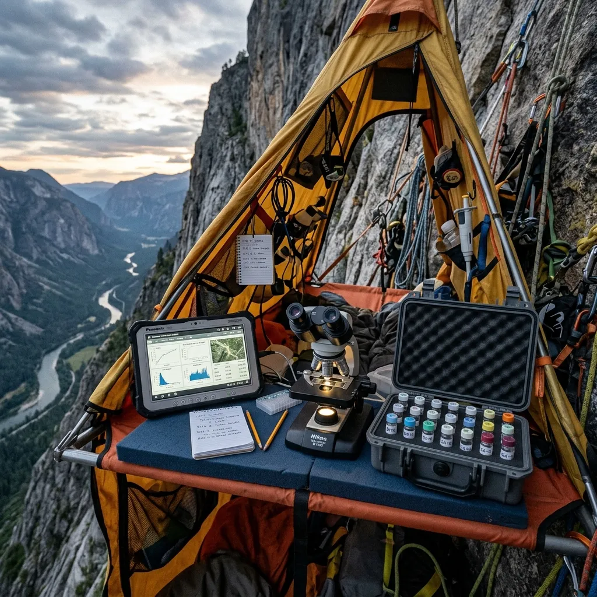

SUSPENDED PORTALEDGE HABITATS
Enclosed two-person cliff platforms engineered for prolonged stationary taxonomy. These modular systems feature insulated thermal floorboards preventing convection heat loss, internal microclimate data loggers, and exterior solar recharging arrays capable of sustaining critical lab equipment. Designed for consecutive seventy-two hour vertical deployments, permitting uninterrupted taxonomic categorisation directly on the cliff face.